Orario
- Lunedi–Venerdi
- 14:00–18:00
- Sabato
- 08:30–12:30
- Domenica e festivi
- Chiuso
* Orario valido dal 1.6. fino a 15.8. 2010
Negozio
Nel nostro negozio troverete tutto il necessario per la produzione dei vini diqualita.
Categorie di prodotti
Coadiuvanti enologici
- le Bentoniti (Bentogran, Pentagel, Pluxbenton,...)
- Caseinato di potassio
- Sol di silice
- Gelatina (liquida, polvere)
- Carbone (deodorante, decolorante, Carbosil,...)
- albumina d'uovo
- colla di pesce
- PVPP
- Acido citrico
- Acido tartarico
Chiarificanti policomposti
- Caseostar
- Alfa P
- Technoclar WA
- Phenol free
- Caseocell
- Caseomix
- Microcell
Risorse per la tutela del vino
- acido solforoso 5-6%
- Metabisolfito di potassio
- Zolfo dischi e strisce
- Tanisol e Stopflor pastiglie
- Ferroblock, Citrosol
- acido metatartarico
- sorbato di potassio
- ampia scelta di tannini (quercia, vinaccioli, bucce,...)
Lieviti
- Uvaferm
- Lalvin
- Fermol
- Ruler (art enology)
Enzimi
- Lalzym
- Endozym
- Rapid (liquido e polvere)
Disinfettanti e detergenti
- Removil
- Enoidrosan
- Supersodal
- Neodetersol vetro
- Sanoton
- Detersol
Filtri
- Filtri a piastre SEITZ 40x40 e 20x20
- Filtri a farina Kieselguhr
Altri prodotti per i produttori di vino
- Bottiglie - varie da 30ml - 1,5 l
- Tappi (sughero, corona, Neocork silicone, alluminio, per i vini spumanti)
- Tappi decorativi per bottiglie da 0,75 l. vari colori
- Scatole di cartone di regalo e di trasporto, gambi 1-4 bottiglie
- Vari tipi di vasi, brocche, tagliacarte
- Apparecchiature per l'analisi del vino:SO2 libera e totale, la titolazione acidita, pH-metri
- Articoli per cantina: tubi in acciaioinox e pompe, guarnizioni, tubi inacciaio inossidabile e le valvole didiverse dimensioni
- Tubi e pompe Rover
Altro
- Vasi in vetro vari di 106ml - 2,5 litri
- Vasi per miele con coperchio
- Guanti protettivi
- Forbici per la vendemmia
- Accessori per la cura della vigna
- Etichette, nastri adesivi
- Terra fertile per orti e giardini
- Fertilizzanti
Su richiesta, vendiamo tutti i prodotti enologici a peso desiderato.
Su richiesta forniamo anche le mini-lineedi riempimento, i filtri, sonde di riscaldamento, il dosaggio solfonati, rifrattometri ottici, pompe e altreattrezzature.
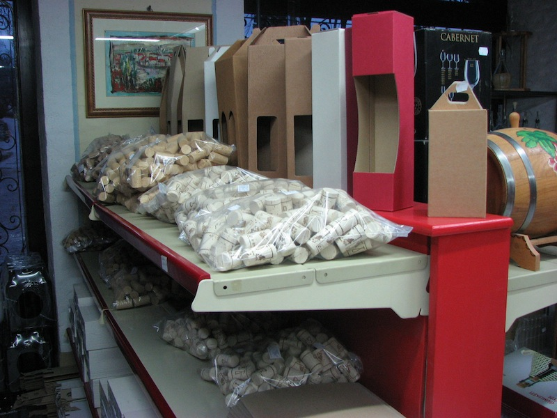
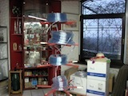
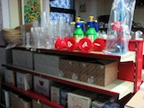
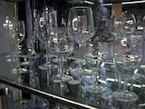
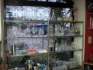
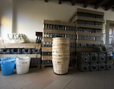
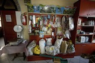
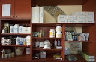
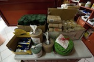
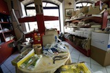
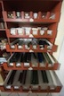